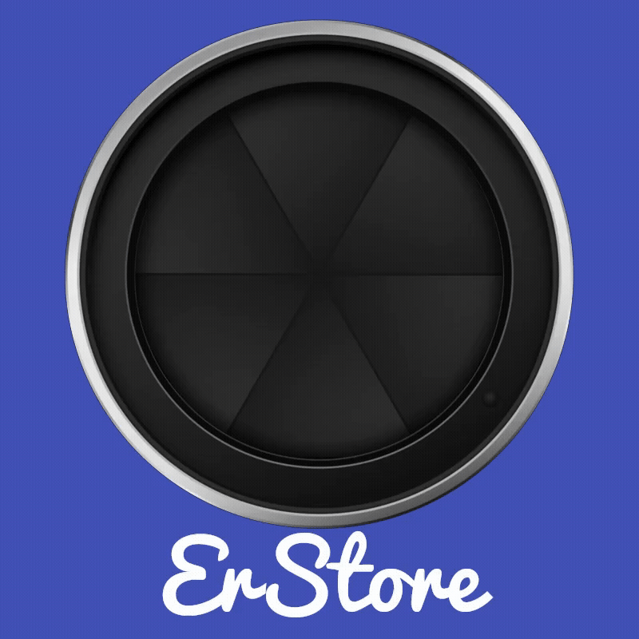

<mat-toolbar color="primary">
  <ng-container *ngIf="!isLog; else viewMenu">
    <button mat-icon-button (click)="onToggleSideNav()">
      <mat-icon>menu</mat-icon>
    </button>
    
    <span>ErStore</span>
    <span class="spacer"></span>
    <div>
      <button mat-mini-fab color="link" routerLink="carritoCompras">
        <mat-icon >shopping_cart</mat-icon>
      </button>
      <a mat-button [routerLink]="'/login'">Login<mat-icon>login</mat-icon></a>

    </div>
  </ng-container>
</mat-toolbar>

<ng-template #viewMenu>
  <button mat-icon-button (click)="onToggleSideNav()">
    <mat-icon>menu</mat-icon>
  </button>
  
  <span>ErStore</span>
  <span class="spacer"></span>
  <div>
    <button mat-mini-fab color="link" routerLink="carritoCompras">
      <mat-icon >shopping_cart</mat-icon>
    </button>
  </div>
  <div>
    <button mat-button (click)="onLogout()">
      <mat-icon>logout</mat-icon>
    </button>
  </div>
</ng-template>
